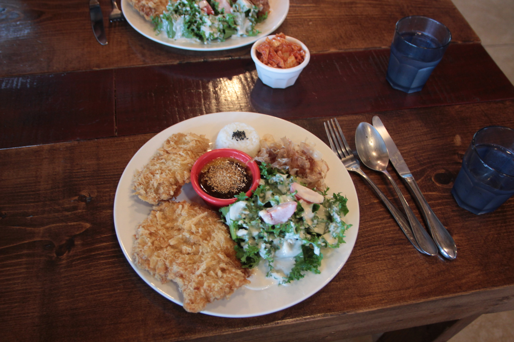
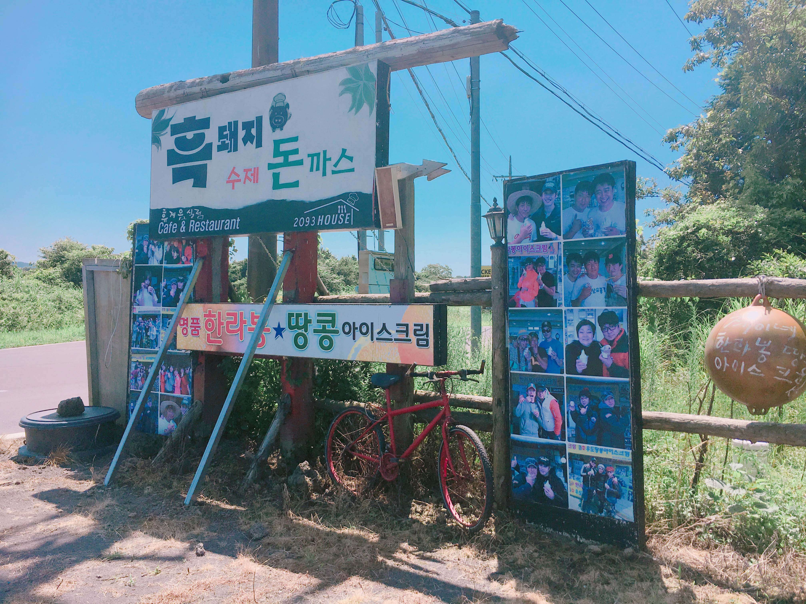
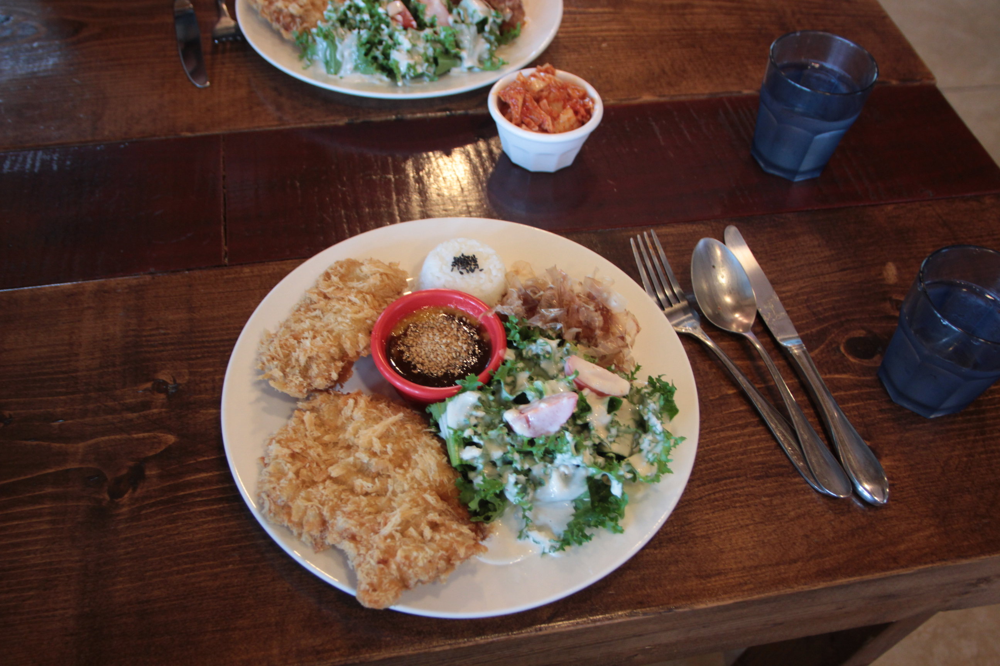
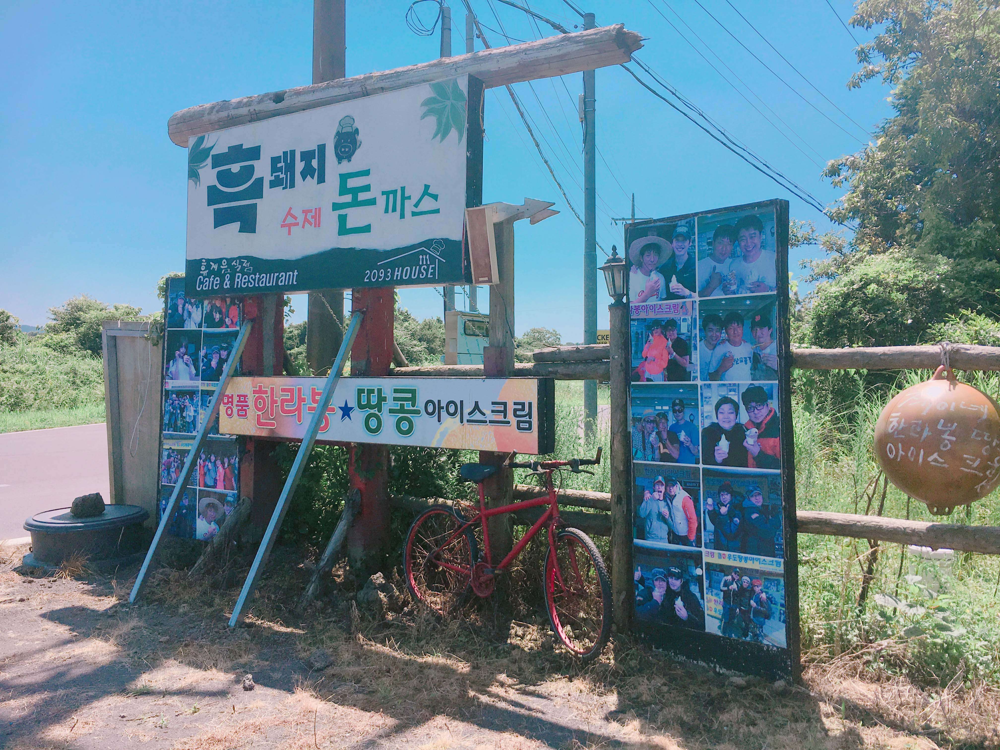

2093하우스
#제주도 #조천읍 #2093하우스 #돈까스

insta

map
매일 11:00 - 18:30
070-8833-2093
저희 가게의 주 메뉴인 흑돼지 수제 돈까스 정식은 일본식으로 튀겨 튀김옷은 바삭하고
두툼한 고기는 100% 제주산으로 촉촉하고 부드럽습니다.
소스는 제주 스럽게 한라봉과 감귤로 만든 특제소스를 준비하였고,
사이드 메뉴로 타코야끼와 샐러드 그리고 에피타이저로 흔한 미소 된장국이 아닌 전복죽을 함께 드립니다
| 흑돼지 수제 돈까스 정식 | 15000원 | |
| 영귤에이드 | 5000원 |
제주 제주시 조천읍 남조로 2093 [지번]교래리 786-21